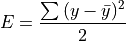
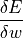

气和深度学习¶
综述¶
春节假期在国外旅游，看了一篇别人分享的一篇文章和两本书。
文章是《扬.克里克：前往人工智能的未来，要先回到中国的历史》
书是：
《Fundamentals of Deep Learning (Nikhil Buduma)》
《Chinese Philosophy: An Introduction (Ronnie L. Littlejohn)》
有不少想法，所以，我想通过这个系列几篇文档把这些想法整理一下。
首先说一些泛泛的想法，首先是，我有个感觉，文化真的是无法翻译的，那本《Chinese Philosophy》我感觉已经对很多中文经典的语义表达得非常接近了，但我几乎可以肯定， 看那本书的外国人，根本不知道这是在说什么。
这里面有个很大的问题，是词语的多义性。我们说“天地”，可不是说“Heaven and Earth” 。我们的天地，不仅仅表示天空和土地，它还表示天地中间的万物。而且如果加上天地人 ，它还表示我们关注的三极。这就是所谓语义的内涵和外延，每个词语表示的意思不仅仅 是那个语义本身的意思。反过来，英语中说Heaven，对应的可不是Earth，它常常还对应 Hell。Heaven是The place where God lives and where good people go after they die 。
你说这种外延你怎么翻译？
所以，哲学要翻译不是不可能，但必须重建语言空间，基于对应的文化来翻译才有可能， 我也能给我印度和英国的朋友解释什么是道德经，但原句翻译只是胡猜。
反过来也是一样的，优美的英语无法直接翻译为中文。下面是《傲慢与偏见》国内版本的 第一句：
有钱的单身汉总要娶位太太，这是一条举世公认的真理。
看完这句话我看下去的信心就受到打击了，这种胡言乱语完全打动不了我。
然后你再看看英文版：
It is a truth universally acknowledged, that a single manin possession of a good fortune must be in want of a wife.
英国人那种尖酸刻薄跃然纸上。
中国人说“一条举世公认的真理”，是严肃的，正经的。但英国人说a truth universally acknowledged，是过度的，夸张的，明显不正经的。中国人说单身汉，大部分时候指缺乏 势力的，一个吃饱，全家不饿的。英国人说一个single man in possession of a good fortune，说的可不是这个意思，这说的是“一个有钱人，但他为大家提供了一个机会，那 就是成为他的老婆，就可以拿到他的地位和钱”。所以这句话的重点不是“单身汉有钱了想 要找老婆”，而是“这个有钱佬居然没有结婚！机会啊，机会！”
如果仅仅从表面的语义上说，这里的中文翻译没有任何问题，但它基本上丢失原文的全部 感觉。
这是我想说的第一个感想：各位做软件的同行，还有即将的同行们，好好学好英语是正道 啊。现代工业文化，在几十年间，很大程度上都被聚焦到美国了，重要的知识都是用英语 表述的，被翻译过的书籍折损率很高的，这种捷径选不得的。
在我看这本《Fundamentals of Deep Learning》之前，我其实看过相当不少的国内翻译的 ，或者国内专家写的关于深度学习的介绍和教材的。反正我只是懂了一点点“事实”和“表象 ”，根本没有搞清楚深度学习本质是什么。但这本书很短时间内就给我把事情说得相当清楚 了。那种举重若轻的能力，是大部分国内能看到的书没有办法比的。所以，真心要学东西 ，还是多逛逛Google图书，整个环境和文化背景不同，两者的层次还是很不一样的。我毫 不怀疑，再经过几十年的技术冲刷，我们也会产生同级别的大师和“小师”，毕竟知识还是 来自实践，但显然不是现在。
这里准备写3到5篇博文，总结一下，我现在理解到的Deep Learning是什么。
在本文开始的时候，我提到《扬.克里克：前往人工智能的未来，要先回到中国的历史》， 我倒不是要推荐这个文章。这种标题，总能让我想到某种陷阱：“中国人看了以为外国人崇 尚中国文化，外国人看了觉得中国文化真是土鳖”。纠缠在这种“他看不看得起我”的名上， 本身就是土鳖行为。
我提到这个文章，是要指出里面一个大部分人都会误会的对中国文化概念的错误理解，这 就是气。
什么是“气”？
“气”是一种天地能量，驱动着这个世界的发展？你这样理解，就表示你完全不明白中国文 化，不明白“有拱璧而先驷马，不如坐进此道”的道理。
看下面这条线：

现在把它修改一下：

你还能看到那条线吗？实际上，你能。你脑子里可以补出那根线来。这中间断掉的，就是“ 气”。
这里面有“能量”吗？
这和能量毫无关系，这是Pattern！
为什么你认为它是能量？因为你想得到它，控制它，改变它。你希望“吸收天地灵气”，然 后来个“龟-波-气-功——Bong！”
所以你不明白为什么中国哲学是一种“自然哲学”（Ontology）。自然之道，不是拥有，不 是改变，而是顺应和利用，是和它合一。
我们的“天地”变成现在这个样子，不是有外部的“气”在牵引着它，而是组成天地的每个实 体都拥有自己的能量，它们综合作用形成现在的样子，这些样子里面有Pattern，我们发现 了这个Pattern，这是“气”。“气”不需要理由，因为“理由”（就算它存在），背后也是复杂 度——我们只知道它是这样的，但我们不知道为什么。“气”不在万物之外，“气”是万物本身 （的Pattern）。
这是气的道理。
也是深度学习的道理。
我们来看看下面这个成绩表：

你能看出什么东西来吗？你从这里最多能找你家儿子及格了没有。
我们从这个角度来看呢？：

这些图我都用抽取其中两个维度作为横坐标和纵坐标绘制的（当然，大部分简单学过统计 都知道这是“散点图”），从这些点的聚集，我们可以看到这个班这次考试的特点：平时成 绩好的，考试也成绩好。男同学比女同学多，最好成绩，最差成绩的都是男同学，女生都 在平均的位置。动手能力也具有相关性，考试成绩好的，实验成绩也好。
为什么会这样？你当然可以找理由，但我们不关心，我们首先认知的是：它呈现这样的“特 征”。既然它现在呈现这样的特征，它的下一次发生，“很可能”也呈现这样的特征，至于为 什么？那是另一个话题，我们首先关心这个可能性，我们不那么关心那个“为什么”。
这是个很有趣的事情，信息在某个大小，和提取的情况下，才呈现出特征来。《上帝掷骰 子吗》里面举过一个类似的例子，大概是这样的：
下面这美女长得怎么样：

你根本不知道。
放大一点呢？:

你可能觉得不错（网上随便下的图，侵删）。
再放大呢？：

我不知道你怎么看。
但特征只在特定的大小和角度上呈现的。
这是我们形成思考的基本方式，我们不是基于“逻辑”来思考的，我们是基于特征来思考的 。我们再看一个简单的例子：加入我们“关注”了这个时间的某个现象。这个现象我们“感觉 ”和三个“原因”相关，我们把这个现象表达为一个方程q=f(x,y,z)，我们看着它的发生，我 们要猜它的规律，这个过程可能是这样的：
第一次经验：f(1,2,3)=14：按人的一般线性思维，他自然用线性逼近，认为 f(x,y,z)=ax+by+cz。所以——啊，知道了，(a,b,c)=(7,2,1)，（基本上是胡诌，没有经验 嘛）
第二次经验：f(3,2,1)=10：啊，看起来把a弄得太大了，缩一下吧，(a,b,c)=(2,3,2)
第三次经验：f(1,1,1)=6：看来还是不太好，再来调整一下？（a,b,c)=(1,2,3)，完美
如果后面再发生一万次经验，都和这个经验一致，那我们就认为这个规律是这样的了。第 一万零一次不是呢？——啊，那是“例外”，例外很多怎么办？那就接近就可以了，这叫线性 回归：

这样，我们对这个世界的理解就可以简单用截矩和斜率来解释了，虽然有偏差，但大部分 时候是“接近正确”的，背后是否有确定性的因素在左右着？也许吧，但我们不Care，没有 确定饭的卡路里含量难道就不吃饭了？差不多就行啦。
当然，规律不总是线性的，聚焦就好了，它还可以是这样的：

这是聚集到一个点了。
或者更复杂是这样的：

这就需要更复杂的参数来做“归纳”了。
我们很自然可以发现，参数越多，逼近得越好。那么，有没有一种万能的逼近方法，通过 这种方法来逼近更多的Pattern呢？
啊，那就是现在炒得热火朝天的神经网络了，它的具体原理我们下一篇讨论，我们先简单 理解：神经网络是用成千上万个参数来逼近高维空间中的大量的（几百万之类的）的点， 尝试逼近出一种模式来。
我们先不讨论这种逼近算法的方法和效果。我们回到最基本的问题上来：
首先，我们一直以为，思维的本质是逻辑，是严格的，但从前面的讨论看来，人的思维似 乎并非如此，严格的逻辑思维只是我们很多非严格思维的精华，但就如同吃饭，我们吃的 大部分不是“精华”，只吃“精华”你只会营养不良。我们过去对智能的理解是错误的，智能 大部分不是逻辑，而是Pattern。
而且，很多Pattern还被冠以“逻辑”之名。就好比我在这里写的一堆文档，说得似乎头头是 道，其实我只是把几个现实强行用逻辑关联在一起而已，等更多的点进来训练我，这些逻 辑就变了。
第二，我们以为“认识”，是了解一个事物的“本质”，但从这里的讨论，我们发现，认识并 非了解事物的本质，而是通过忽略某些数据，从而从数据中提取出Pattern来。然后拿 Pattern来做逻辑思维的判断。
那么，我们提取参数的不同，就会获得完全不同的判断。所以神经网络中层数和算法仅仅 决定了逼近的精确度，真正决定能否提取成功的是选取的训练参数（要素）和分辨率——我 们能否把那张照片放大或者缩小到可以提取出模型来那个大小，才是事情成败的关键。
就好比我这个文档：PCIE总线的地址问题，里面的信息大部分都是PCIE中的，都已经存在 的东西，再写一个有什么意义？——实际上是有意义的，因为它提取了一个Pattern，得到了 其中一个“特征”，“学习”，大部分时候就这么回事，如果什么都吸取进来的话，特征就不 存在了。这个观察很重要，这是虚弱的机器学习（如果用CNN对比人脑的话）的意义所在， 人的脑子虽然牛，但它的输入是被视听触感所限制的，输入被限制，能提取的Pattern也被 限制了，而机器学习大大扩展了这个范围。
同一份知识，换一个参数提取Pattern，会得到完全不同的东西。
你知道吧，这两个“认识”，让我相当不爽——老子半辈子制造和研究“逻辑”（写程序嘛）， 到头来，我们新兴的技术是一种“不要逻辑”的技术。它强调的是“试”，“感觉”，“灵光一闪 ”，“经验”，“调整”……这些它么没有脑子的，缺乏逻辑的，神神兜兜的，缺乏共性的，却极 耗算力的玩意儿……
好了，现在我们最后来谈谈“气”这个问题。我前面简单的归纳，说“气”其实是个Pattern， 这说起来仿佛是这样的：我们人的思考，是一个神经网络（比人工神经网络复杂得多的神 经网络），但我们的理智，仅仅是神经网络的输出，但神经网络的中间，有一组很大的参 数，在控制着我们每波经验的实际输出过程，这形成了一组非理智的“感觉”，这种感觉里 面，也有Pattern，会改变我们的实际决策，所以，知识，除了有“理智的，有逻辑的知识” ，还有“感性的，无逻辑的知识”，这种知识，同样在左右我们的最终决策。
而基于气的思维，更接近传统中国哲学，而基于逻辑的思维，更接近“现代思维”——我这里 不用“西方思维”，原因是其实一直以来，就算没有其他思维的侵入，我们也不断尝试用逻 辑思维来考虑问题。逻辑思维的直观性很好，人类思维在发展后，会越来越趋向于使用这 种思维，但这种思维不是万能的。这里面有一个“有-无”之辩在里面。
设想一下，你有一群人，要排队过关，一个接一个，这时效率是最高的。这时，突然来了 一个旅行团，10个人，导游过来说，“大家行行好，我们的飞机马上就要起飞了，让我们先 去吧”，这没有问题，让他们插个队，这个事情仍可以维持高效。但后面一位大爷出来说了 ，“你们这样搞不行，我也快要迟到了，本来还好，他们这么一插队，我怎么办？事情总要 讲个先来后到吧？”，导游说，“你跟我说，先来后到？刚才上电梯的时候不是你插队，让 我们一个团友多等了3趟，我们也不会现在才到”。旁边一个女士不答应了：“你那个团友多 等也不能怪旁人，如果不是他有狐臭，大家都不想他进那个电梯，怎么会有这么件事？”
“对于狐臭这个问题，我们要来谈谈契约社会的问题了……”
“……”
“你的这个问题，我们要从明朝时候，我太爷爷的一个夜壶说起……”
看到没有？关注逻辑的缺陷在于，逻辑是无穷无尽的，如果深究逻辑，就可能什么都得不 到。而“气”一说，是说，在设定目标以后，我要用我已有的训练模型，直接找一个模式出 来，这个模式不一定对，但它是“存在模式”的。深度学习的关键也在这里，它不强求逻辑 ，它求的是某种维度下的模式。以及这种模式和目标的关系。
对于这个问题，这里有一个更好的例子：道德经讲了什么？为什么它广受推崇？，请参考 文末的第三个补充注释。
人工神经网络¶
一篇我们抽象一下人工神经网络是什么。首先要说明的是，作者本身不是人工神经网络的 专家，甚至连深度学习工程师都不是，作者是做平台软件的，但因为平台同样要支持深度 学习，那么，支持深度学习到底需要我们干什么，都显得有意义了。同时，这样从一个“外 人”的角度来看一下人工神经网络，也能帮助其他相关行业的人理解它。正如我在第一篇里 面总结的，所谓特征，是特定角度和特定维度对信息的提取。任何一个角度的提取，都有 助于我们发现新的特征。
在我所在的单位中，常常有其他产品的，或者法务的，战略的，投资的，标准组织的同事 来找我，了解开源社区，软件，操作系统等方面的情况，他们问的问题很多对于我这个领 域来说可以说是比较“幼稚”的，但我每次都从这样的交流中获益良多，比和不少同行的交 流获得的收益还多。因为我从来没有从这些角度中考虑过我这个领域的问题。所以这里这 个总结，也是这个意思，对于人工神经网络，我是相当的外行，但一个外行的总结，很可 能也是有益的。
另外，再说明一下，本文也不准备涉及到深入的数学细节，要深入到那种细节不如直接看 教材本身，没有必要做这个抽象。等我们建好这层逻辑了，我们要深入看数学细节，那是 另一个问题。所以，看本文，你不用拿纸笔出来，理一下基本的逻辑链就好了。
正如我们在第一篇中讨论过的，深度学习，主要是从复杂的数据关系中，抽象出它的特征 ，从而成为我们的一种知识。那里举了几个例子，比如线性回归，点回归等等。但这些方 法都有比较明显的缺陷，就是它的参数是非常有限的，你眼睛看到一个五彩斑斓的图景， 耳朵听到一个一个闹闹嚷嚷的声音，你一下就能捕获某个特定的特征，这使用的参数就不 是简单几个斜率，角度，位置这样的参数可以决定的了。我们需要有很多的参数，而且， 我们肯定这些参数不是线性的。做了这么多年的数学，我们会有一个基本的感性：线性关 系的组合，常常还是线性的。我们需要一个模型，这个模型可以提供很多参数，有共性的 东西，可以得到相似的结果。基于这样一个模型，我们就可以不断学习，提取特征，从而 发现事实中的“规律”来了。
也不知道是数学家还是生物学家，从人的大脑中发现了一个挺好用的模型。他们发现，人 的大脑皮层的结构非常简单，它由一个个的神经元（Neutro）组成，Neutro伸出很多触突 （Dentritic）和感官神经相连，然后在通过长触突（Axon）连到其他的神经元上。当 Dentritic受到刺激的时候，比如眼神经看到东西了，就会形成不同的信号，刺激到神经元 ，神经元把这个信号组合一下，就直接影响到下一个神经元。这样在外界的刺激下，信号 会在神经元上形成一个扩散，最后，“有规律”的刺激，就会得到增强，如果下次这种规律 再进来，人就会认为，“这就是同一个东西”，这就是“抽象”或者“感性认识”了。“抽象”之 上“再抽象”，就成为“逻辑”，“逻辑”再抽象，就成为“哲学”了：）
数学家抽象了这个模型，他们把触突加入到神经元的信号抽象为一个数字，简单把他们按 权重卷积在一起（如果你已经忘了什么是卷积，不要紧，这个东西简单理解，就是比如我 突触上有10个输入[a1,a2...a10]，每个权重是[w1, w2, ...w10]，卷积就是 a1*w1+a2*w2+...+a10*w10，就是加权和而已，然后神经元本身再耍一点点小脾气，把这个 结果非线性化一下，把它匹配到一条曲线上，比如匹配到Sigmoid：

为什么是Sigmoid，暂时来说是没关系的，就是让它变一下而已，最后加个偏置（加上一个 常数），然后就作为本神经元的参数传递出去，搞定。
除了可以用Sigmoid，其实也有很多曲线可以用，比如tanh（双曲正切函数，中学课程了） ，它是这样的：

其实都差不多，就是让这东西非线性，而且范围受限，不能特别大，然后通过偏置参数把 它放到一个中心的位置上而已。
用这种方法把这些神经元分成多层，连起来：

类比为人，感官的信息传递进来，根据触突的权重不同，以及神经元的属性（就是那个 Sigmod函数和偏置）了，我们就可以得到一个新的值，用这个值来刺激下一个神经元，就 可以形成波动。最后是否会形成特征？那就要看运气和输入本身是不是有特征了。
看看这个数据结构，你就知道这个计算量有多大了。人的大脑可有大概一万个神经元，每 个神经元对外伸出6000个连接。这个计算简直是天文数字，人脑其实是一个超级并行计算 机啊。所以这个原理几十年前就知道了，但一直毛用没有，因为根本就没有东西能做这种 运算，现在计算机变快了，所以这个技术又重新火热起来而已。
而且，就算现在计算机变快了，能够弄的层数也不到十层，每层有几百个节点之类的，远 远不能和人脑比。所以只能干针对性的活。人脑可以可以基于自身拿到的好处，坏处，是 否可以生存，是否吃得更好，妈妈的教导，书本的强化，快速对自己的神经元（那些w）进 行训练，从而形成一个高级的训练模型。而现在的人工神经网络，不过就是看幅图，然后 人告诉它，“这是花”，看上几万幅，看看能否归结为一个“规律”来。图的大小，使用的格 式，这个格式如何定义（比如是RGB的还是UVY的），都有要求，而且，关键在于，它还不 能自己教自己。它必须是我们（人）认出了10000张花的照片，然后让它用这个来训练自己 ，从而得到一组“花”的参数。这些参数，就是人工神经网络的输出了。
而人脑，是要先从感受的“痛”，“不舒服”，来修正对这个世界“好”，“坏”的看法，然后从 这些好坏中，抽象中间模型，得到“危险”，“食物”，“亲近”这样的概念，存储起来，然后 用存储起来的这些概念（这些称为“记忆”），再形成文字，思考，逻辑……想象一下，两者 相差的层次有多远？
扯远了，我们用这个对比，可以看到所谓人工神经网络是什么，它其实是个带有成百成千 个参数的一个函数，我们要通过回归，把这些参数调整到适配一个模式，让这些参数可以 用于判断下一个复杂的情况。用更接近的数学语言来描述，假如有一副图像，每个点的RGB 值可以表现为一个向量x=[p1,p2,p3,...,px]，它是一朵花，我们也可以表现为一个向量 y=[0,1,0,0,0]（每个向量的成员表示一种“东西”，1表示是这种东西，0表示不是这种东西 ，如果有两个1，就表示这里面两种东西都有。还可以是0.7，表示有70%的可能是这种东西 ），而神经网络就是一个带有一个向量w=[w1, w2, w3...]的函数y=f(w,x)。
这本质上和线性回归没有区别，这看看上面这个算法的组织过程，你就会发现，它是一个 混沌系统，随着w的不同，它可以变成任何形状，从而看看我们能不能匹配出合理的“抽象” 来。
由于神经网络的自由度如此之高，几乎可以说无论你有没有规律，它都能给你“总结”出一 个规律来，所以，它的总结是不能做准的。实践中，人们把“经验”数据（比如一万张花的 照片，分成两个部分，一部分用来训练，一部分用来测试（或者更复杂一点，是三个部分 ：训练，校验，测试），如果训练的规律用在测试上也成立，这个计算出来的w向量，就认 为是有效的，如果不成立，我们就称它为“过度匹配”（Overfit）。
关于过度匹配，下面这幅图很好地表达了这个意思：

过度匹配通过了训练用的每个点，却离验证和实用的样本十万八千里。
从这个观点上可以获得很多关于人类思维模型的深入理解，但在我们感叹前，还是专心理 解一下人工神经网络算法本身。
稍考虑一下前面这个问题，你很快就发现，整个问题最难的其实是怎么调整w。这个技巧照 理说应该从人脑来学，但我很怀疑我们都没有研究清楚人脑是怎么弄这个东西的。所以， 现在书本上看到的方法都相当“人工”，它还是有一定“逻辑”的。这个方法叫“梯度下降”。 基本原理是“基于输出反馈一点点调”：
首先，我们可以随机产生一组w，这时，算出的结果肯定是错的。那么结果和正确的输出就 会有一个偏差。计算总标准方差

就可以得到一个偏差值，我们希望让这个偏差值变成0，我们的逼近就是最好的。但向哪个 方向调整呢？调整多少呢？那就需要知道需要调整的那个点的导数了。这样，我们可以对 这个标准方差对每个

求偏导，如果我们想象f(w,x)是一个在区域内连续可导的曲线，它就会符合泰勒级数的要 求（别担心，我的泰勒级数知识也都还给工程数学老师了，我们记得原理就行），这样， 我们基于统计和激活公式，可以计算在当前点上E对于每个w的偏导

用这个偏导乘以一个“步长s”，就有机会降低E，通过多次这样的一个过程，E就会一点点下 降到一个较低的水平，这样我们就可以得到一个最优的w了。
这个用一维毕竟来理解（很多教材都用二维偏导理解，这样更好理解，但画那种图对我来 说太耗时间了，我们对付一下，读者看懂这里了，再看那些描述就容易脑补了）：

请注意一下这个图的横坐标和纵坐标是什么。这两者和f不是直接的关系。它的目的是让f 的结果逼近整个训练空间。
梯度下降法想想真是细思恐极，本来我们觉得计算一次f(x)（把w当作常数）已经是很大的 计算量了，然后有一万个样本，这玩意儿还要计算10000次。但10000次还不算，这只是得 到了一组“偏差”，然后我们得用梯度下降法来把这个过程重复一次又一次，等着这个E降下 去，这个计算量就要让人晕过去了。
为了让这个计算过程快一点，我们当然希望是把步长设置得大一点，但步长设置太大了， 在 [公式] 点上的偏导就管不到了，它会跳到拐点之外，让你的逼近失去效果。还有其他 优化方法，比如你用全部数据来计算E（Batch Gradient Descent），我也可以基于最近10 次的数据来计算E（mini Batch Gradient Descent）来进行调整，反正这个东西又不严格 ，步长的选取，和偏微分其他参数都会对这个东西造成影响，所以也不在乎这个不严格了 。想想我们在第一篇里的一个总结：特征在特定的精度和维度上呈现。
理解梯度下降法，我们一定程度上可以理解为什么人工神经网络有“层”这个概念。其实我 认为“层”在算法本身是没有意义的，它本质上是一种简化。实际上在提到人的神经网络的 时候，我们并没有看到有人提到“层”，因为那就是一个自然组网。神经元之间互互相连。 它的连接也不是我们这种基于w的数字化的数据，而是模拟化的组合效果。把结果进行组合 ，然后激活出去，这是我们人为加出来的。激活函数是什么，在我们这里是单一的算法， 在人的神经元中，可能是个模拟的组合结果。而人工神经网络的所谓层，是为了软件组织 的方便而建立的，因为用了层，我们不需要给每个神经元一个算法，这简单很多，同时， 因为同层的神经元算法单一，就为数学上推演前面要求的那个偏导带来了证明上的便利。 这是为什么需要层，同一个层的神经元，使用同一个算法，仅仅是w参数不同，他们在偏导 上呈现相似的特征，就可以用相似的方法计算偏导并进行梯度下降。
实用中的人工神经网络，通常包括一个输入层，一个输出层和一组“隐层”。一般来说，输 入层用作标准化，控制输入向量的范围等内容，基本上代表原始数据。输出层常常用的是 softmax算法，用来帮助结果在整个输出向量中“聚集”并且总概率正好是1（查一下wiki就 可以知道，这算法主要用于概率论中对结果进行“分类归纳（categorical distribution） ”）。而真正导致训练结果在不同的数据集下呈现不同的样子，就是靠中间非线性化的“隐 层”，这里用的算法常常是卷积，LeRU，Sigmoid，Tanh这一类的算法了。
而梯度下降，是反着的，先用输出层算出偏差，根据输出层函数在这个偏差点上算出这个 位置的偏导，反馈给上一层输出，让上一层用这个作为偏差，计算它在这个点上的偏导， 基于链式规则，就一点点可以得到整个网络的调整了。（这部分原理推荐参考这个描述： 胡逸夫：如何直观地解释 back propagation 算法？）
综合起来，现在的神经网络更像是人脑的一个“脑残”版本，拿到了人脑的万分之一或者百 万分之一的能力，然后看看能不能干一些人脑“不屑”干的活。它的优势主要有两个，一个 是人脑会自动收敛，不接受反复重复的脑力计算要求，它不会有这个问题，因为它“一根筋 ”。第二是它的存储能力很强。人脑的东西很容易遗忘，然后那些特征就没用了，人脑的整 个训练目的都是“保护自己”，但“脑残”的人工神经网络没有这个问题。如果某一天，人工 神经网络完善到人一样的水平了，我估计它的文化，目的，思考角度，都会和我们人完全 不一样的：）
作为平台工程师，我注意到这个业务对平台的要求是这样的：
- 数据量极大，要反反复复在一组巨大的数据中进行浮点运算，所以，它需要极高的计
算总线带宽。由于每次梯度下降，都涉及整个网络的重新计算，分布式运算之间的通 讯要求极高，所以如果进行分布式运算，对带宽和时延的要求也很高，所以高性能 RDMA对大容量训练平台来说，很可能是个必须的功能。
- 大量的矢量计算，应对方法可
能是高维矢量计算，或者类似GPU那样依靠多个计算节点进行多线程计算。
大量的低精度运算，甚至非准确计算。如果像一些人说的那样，非准确计算可以降低芯 片的设计成本，那么这将改变整个CPU的设计逻辑。比如，我们不再需要1000+1000必须 等于2000，只要它能等于
可能就可以了。
逻辑思维很少，却极为消耗算力。好比卷积，只需要反复乘了再加就可以了，不需要任 何逻辑，这会改变很多东西。比如，我这样的靠逻辑吃饭的人会少很多，也不需要很高 的IO，但会占满整个CPU，里面全部都是加加乘乘，我们原来习惯的那些profile方法会 统统失效，只需要粗暴的计算，计算之间也没有什么逻辑关系，CPU会像块砖那样来用 。总的来说，这最后需要的不是个CPU，只是需要一个“算法器”（TPU），里面没有逻辑 ，只有“一小片脑子”，用来进行逻辑判断的CPU只是需要这些脑子的“投票结果”。这听 起来有点越来越像人了：CPU充当上意识，进行逻辑判断，TPU充当下意识，进行快速“ 模式判定”，也应该计算机下一步的，不远的未来吧。而且，我猜，到最后，会想现在 大部分SoC一样，模拟部分功能虽然少，却占据整个SoC面积的主要部分，而数字部分功 能多，复杂，会占据SoC面积的很小的部分。在未来的SoC中，CPU将占据少数的部分， TPU将占据主要的面积。
和CPU程序不同，神经网络的开发和调试过程也需要算力，买台PC或者Laptop就想开发 软件的时代将会过去，没有算力你什么都开发不了……
回到气的问题¶
在上一篇的讨论中，有人提起这么一个问题：为什么人工神经网络的功耗这么高，而生物 神经网络功耗没有那么高？
这个问题应该要问生物学家。但我这里给一个我的“感觉”。
我在第一篇就强调过，“气”是个Pattern。这个观点背后是什么，我想不是每位读者都注意 到的，这里我希望深入一下这个概念。
对于这一点，我其实还写过另一个讨论：
in nek：中国传统文化下的共通性在哪里？如琴艺、围棋、绘画、书法、园林、武术、医术……
那里其实在强调的是同一个东西：“气”是“ 以无述有”。总结起来，这个意思是：我们在我们所观察到的所有信息中，抽象出了一个 Pattern，然后我们希望用“因果链”把这个Pattern关联起来，形成一个“判断”。这是思维 的本质。好比一只鸡，每天收到主人的喂食，它会形成一个Pattern：“主人是造物主制造 出来每天为我喂食的一种生物”，在我们看来，这并非是这个事情的因果，但在鸡看来，这 个因果就是这样。等它被杀了，它可能就有不同的判断了，但那时那个判断也不重要了。
中国传统文化中的“气”，本质上是说：我看到现实是这个样子的，它有一个pattern，但我 建不出，或者我不想建（为什么不想建我们后面讨论）这个逻辑链，我仅仅想复现这个 Pattern，所以我把它称为“气”。但一旦叫它“气”，在某些人的眼中，就成了一种“因果”（ 天地能量驱动万物运作）了，但这个实非我（我是说原来发明这个定义的人）的本意，因 为人家就是不知道是什么在驱动着，但两者又有Pattern，所以，才类比性地把它叫气的。 你又把它理解为一种因果，这就已经错了。
这就是为什么在《气和深度学习1》中，我强调“气”不是一种“天地能量”，而是一种 Pattern，也是为什么在《中国传统文化下的共通性》，我强调中国文化的共通性不是气， 而是“无”，或者“无为”。
好了，到此为止，也许你仍没有注意到这里的问题是什么。我要正确地观察这个世界，就 不能用我的个人期望去影响它，但观察本身就已经是一种影响了（这和量子物理的观点很 像，但拜托，中国古人是肯定不懂量子物理的，请不要动不动脑补，你想证明佛祖已经在 山顶上等我们了，你自己早点去见佛祖，没有必要拉上我们，省得把你那份好处分薄了） ，因为观察这件事情本身也是一种对世界的改变，这种行为本身就可能造成观察的结果的 变化。
所以，气的意思是，我尽量减少我人为加入的“因果”的成分进去，我尽量抓住其中几个特 征，然后让它随着“自然发展”的那个我感受到的Pattern，从流飘荡，任意东西。我故意让 那些东西不确定或者留白，来“说明”那些部分的不在Pattern之内，或者Pattern是运动的 。换句话说，我尝试放弃掉精确性，关注特定的结果，关注一个“综合作用结果”。
从前面的神经网络的类比中，我们可以看到，严格的逻辑判断，是以“感性Pattern”作为基 础的，哪怕1+1等于2这样的简单判定，背后都是大量Pattern的总结，是高成本的信息提取 。所以，今天整个计算机的基础，都是高成本的。一杯水，加上另一杯水，会得到“一大杯 水”，这个信息是粗糙的，低成本的，但它仍是信息，仍是有用的。但“一升水”加上另“一 升水”，得到“两升水”，这是严格的，Specific的，这个信息的规整度很高。
而我们今天的计算机技术，以及一切以此为基础的“数字化技术”，都是建立在这种高成本 的“逻辑思维”的基础上的。河流冲到海边，形成一堆的分流进行大海，这是“自然”形成的 ，这是模拟的（或者说是高度离散化信息的综合的），没有人要求它的每个水流应该数字 化的流到什么地方去，冲刷多深的河沟。两个声音同时发出，形成一个谐音，这是自然聚 合的结果，并没有发生那个数字化合成的过程……在整个数字化的过程中，我们实际上人为 地引入了一个计算过程，精确地规定了一组东西的合并关系，就好比两杯水倒在一起，我 们立即就可以知道它有多少了，但我们却在这之前，先把水量化为了“升”，然后再预期这 两升放在一起是怎么样的，这在“自然融合”之中增加了更多的控制，所以它的成本就很高 了。同样，生物的神经元思考，仅仅是把多个模拟的刺激量聚合在一起，然后让它自然输 出，而计算机方法是把这些刺激量变成数字信号，然后进行确切的卷积，然后进行确切的 Sigmoid等计算，这些都是额外的控制，这形成了“精确度”，从而造成了不必要的成本，所 以人工神经网络的代价就远远比生物神经网络来得贵了。
解决这个问题，一个方向是今天比较火热的“非精确计算”，或者也许需要等有一天，我们 可以生产一个个独立的模拟神经元，每个具有自己的特征，同时我们还有一种实用的反馈 算法，可以修正神经元的参数，这样我们才有可能把这个功耗成本降下来。
简单总结：信息提取是一种创造性的行为，如果针对一个目标，我们提取了过多的无意义 的信息，控制了过度的信息方向，我们针对目标的努力，就是高成本的。
“数字化”和“Specific”是我们今天一切信息处理高成本的原因。“气”，是在逻辑思维在放 弃Specific上的努力（在保证解决问题的前提下）。
这个问题如果反过来理解，其实细思恐极。这意味着，我们仅仅看到，或者感受到这个世 界，很小很小的一个“特征提取”，因为我们被我们的感觉器官限制了输入，然后我们进行 特征提取的时候，被我们的算法和内部参数限制了我们的模式提取模型。当我们拥有复眼 ，不同的感光系统，不同的感受系统（比如基于昆虫的生物素），不同的提取系统的密度 的时候，那我们整个世界的样子，因果关系，就是完全不同的。我们不但仅仅看到一个特 定时空的投影，我们甚至只看到特定时空中某个维度的特征的提取。甚至，时空的整个概 念，都是我们提取的其中一个特征，这个特征，换一下我们脑子的参数，它可能也是完全 不一样的。WTF：）